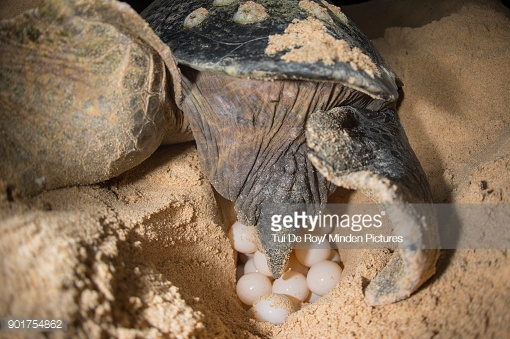
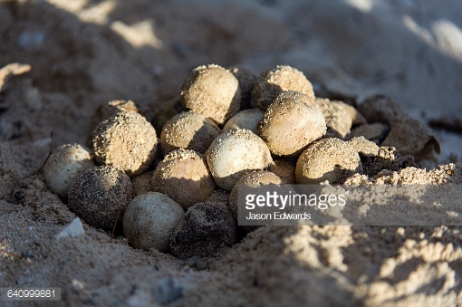

Description: Head is very large with heavy strong jaws. Carapace is bony without ridges and has large, non-overlapping, rough scutes (scales) present with 5 lateral scute. Carapace is heart shaped. Front flippers are short and thick with 2 claws, while the rear flippers can have 2 or 3 claws. Carapace is a reddish-brown with a yellowish-brown plastron. Hatchlings have a dark-brown carapace with flippers pale brown on margins.
Size: Typically 2.5 to 3.5 feet in carapace length (80 to 110 cm).
Weight: Adult weigh between 155 and 375 pounds (70 to 170 kg).
Diet: Primarily carnivorous and feed mostly on shellfish that live on the bottom of the ocean. They eat horseshoe crabs, clams, mussels, and other invertebrates. Their powerful jaw muscles help them to easily crush the shellfish.
Habitat: Prefer to feed in coastal bays and estuaries, as well as in the shallow water along the continental shelves of the Atlantic, Pacific and Indian Oceans.
Nesting: Nest at intervals of 2 to 4 years. They lay 3 to 6 nests per season, approximately 12 to 14 days apart. Lays average of between 100 to 126 eggs in each nest. Eggs incubate for about 60 days.
 Threats to Survival: The greatest threat is loss of nesting habitat due to coastal development, predation of nests, and human disturbances (such as coastal lighting and housing developments) that cause disorientations during the emergence of hatchlings. Other major threats include incidental capture in longline fishing, shrimp trawling and pollution. Incidental capture in fisheries is thought to have played a significant role in the recent population declines observed for the loggerhead.
Population Estimate*: Between 40,000 and 50,000 nesting females.
CLICK Hearto contact us